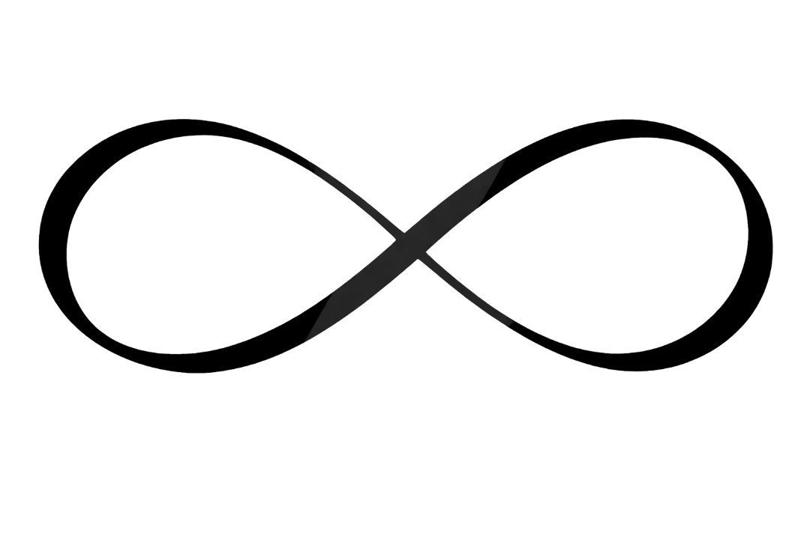

- 22 mai 2026 -
Cu inimile pline de bucurie, vă invităm să ne fiți alături în ziua noastră specială ...
22 MAI 2026
Povestea noastră a început într-un loc neașteptat — la un proiect de construcție (Florești).
Printre planuri și zile pline de muncă, drumurile noastre s-au intersectat pentru prima dată, fără să știm că acel moment discret avea să fie începutul unei iubiri.
Câteva luni mai târziu, la Cahul, timpul petrecut împreună ne-a apropiat tot mai mult. Conversațiile simple au devenit profunde, zâmbetele au căpătat sens, iar pașii noștri au început să meargă în aceeași direcție.
Am ales să ne cunoaștem cu adevărat, să construim nu doar proiecte, ci și o viață împreună. Cu inimile pline de încredere și iubire, am decis să fim unul pentru celălalt — pentru veșnicie.
Povestea noastră a început într-un loc neașteptat — la un proiect de construcție (Florești).
Printre planuri și zile pline de muncă, drumurile noastre s-au intersectat pentru prima dată, fără să știm că acel moment discret avea să fie începutul unei iubiri.
Câteva luni mai târziu, la Cahul, timpul petrecut împreună ne-a apropiat tot mai mult. Conversațiile simple au devenit profunde, zâmbetele au căpătat sens, iar pașii noștri au început să meargă în aceeași direcție.
Am ales să ne cunoaștem cu adevărat, să construim nu doar proiecte, ci și o viață împreună. Cu inimile pline de încredere și iubire, am decis să fim unul pentru celălalt — pentru veșnicie.

Povestea noastră a început într-un loc neașteptat — la un proiect de construcție (Florești).
Printre planuri și zile pline de muncă, drumurile noastre s-au intersectat pentru prima dată, fără să
știm că acel moment discret avea să fie începutul unei iubiri.
Câteve luni mai târziu, la Cahul, timpul petrecut împreună ne-a apropiat tot mai mult. Conversațiile simple au devenit profunde, zâmbetele au căpătat sens, iar pașii noștri au început să meargă în aceeași direcție.
Am ales să ne cunoaștem cu adevărat, să construim nu doar proiecte, ci și o viață împreună. Cu inimile pline de încredere și iubire, am decis să fim unul pentru celălalt — pentru veșnicie.
Evenimentul nostru nu ar fi special fără voi !
!!! Vă rugăm să oferiți un răspuns până la data de 1 MAI 2026